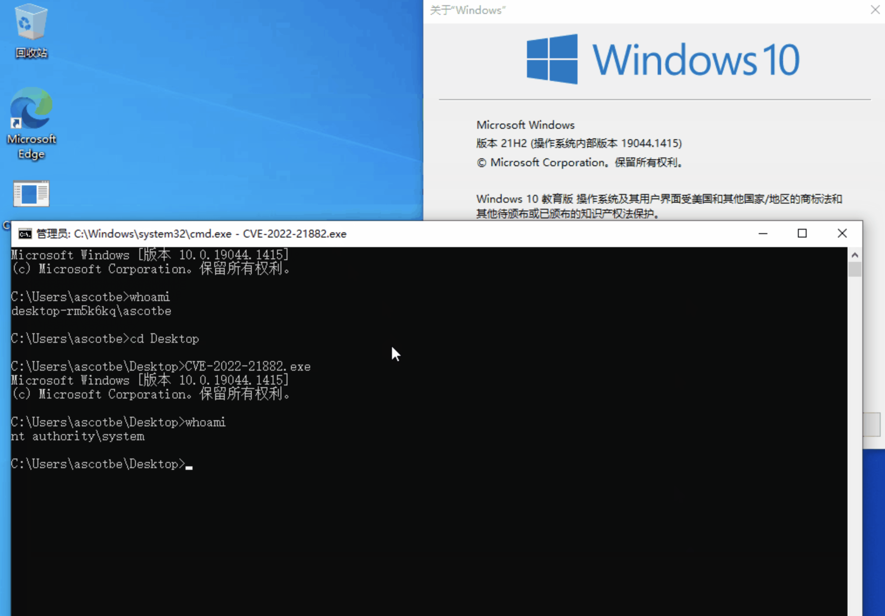

Windows Win32k 内核提权漏洞 CVE-2022-21882¶
漏洞描述¶
CVE-2022-21882是对CVE-2021-1732漏洞的绕过，属于win32k驱动程序中的一个类型混淆漏洞。
攻击者可以在user_mode调用相关的GUI API进行内核调用，如xxxMenuWindowProc、xxxSBWndProc、xxxSwitchWndProc、xxxTooltipWndProc等，这些内核函数会触发回调xxxClientAllocWindowClassExtraBytes。攻击者可以通过hook KernelCallbackTable 中 xxxClientAllocWindowClassExtraBytes 拦截该回调，并使用 NtUserConsoleControl 方法设置 tagWNDK 对象的 ConsoleWindow 标志，从而修改窗口类型。
最终回调后，系统不检查窗口类型是否发生变化，由于类型混淆而引用了错误的数据。flag修改前后的区别在于，在设置flag之前，系统认为tagWNDK.pExtraBytes保存了一个user_mode指针；flag设置后，系统认为tagWNDK.pExtraBytes是内核桌面堆的偏移量，攻击者可以控制这个偏移量，从而导致越界R&W。
漏洞影响¶
| Product | CPU Architecture | Version |
|---|---|---|
| Windows 10 | x86/x64/ARM64 | 1809 |
| Windows 10 | x86/x64/ARM64 | 1909 |
| Windows 10 | x86/x64/ARM64 | 20H2 |
| Windows 10 | x86/x64/ARM64 | 21H1 |
| Windows 10 | x86/x64/ARM64 | 21H2 |
| Windows 11 | x64/ARM64 | |
| Windows Server 2019 | ||
| Windows Server 2022 | ||
| Windows Server | 20H2 |
漏洞复现¶
下载POC文件, 在Windows中运行
